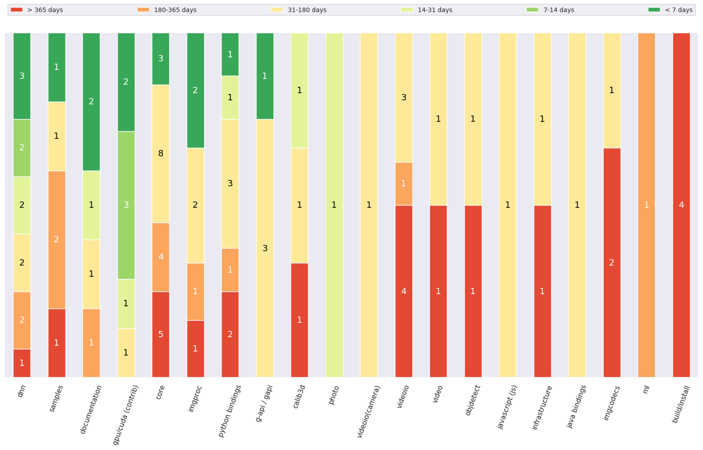

Age distribution¶
Age distribution by categories¶

Age distribution by age categories¶
Pull Requests with age: < 7 days¶
- PR#16184: Added a helper function that will list all available Intel devices
Age: 1 day
Labels: []
Categories: (‘dnn’,)
- PR#16170: added tutorial for text skewness correction
Age: 2 days
Labels: [‘Label(name=category: samples, description=None, type=LabelType.Category)’]
Categories: (‘samples’,)
- PR#16169: fix parameter description of angle of cv.ellipse()
Age: 2 days
Labels: [‘Label(name=category: documentation, description=None, type=LabelType.Category)’, ‘Label(name=pr: needs rebase, description=Rebase patch (and squash fixup commits) on the top of target branch, type=LabelType.Problem)’]
Categories: (‘documentation’,)
- PR#16165: Mac os install
Age: 3 days
Labels: [‘Label(name=category: documentation, description=None, type=LabelType.Category)’, ‘Label(name=platform: ios/osx, description=, type=LabelType.Platform)’]
Categories: (‘documentation’,)
- PR#16164: [WIP] cuda4dnn(conv): fuse eltwise with convolutions
Age: 3 days
Labels: [‘Label(name=category: dnn, description=None, type=LabelType.Category)’, ‘Label(name=category: gpu/cuda (contrib), description=OpenCV 4.0+: moved to opencv_contrib, type=LabelType.Category)’]
Categories: (‘dnn’, ‘gpu/cuda (contrib)’)
- PR#16161: cuda4dnn(concat): write outputs from previous layers directly into concat’s output
Age: 4 days
Labels: [‘Label(name=category: dnn, description=None, type=LabelType.Category)’, ‘Label(name=category: gpu/cuda (contrib), description=OpenCV 4.0+: moved to opencv_contrib, type=LabelType.Category)’]
Categories: (‘dnn’, ‘gpu/cuda (contrib)’)
- PR#16160: optimize cvCeil and cvFloor in fase_math.hpp
Age: 4 days
Labels: [‘Label(name=incomplete, description=None, type=LabelType.Problem)’]
Categories: (‘core’,)
- PR#16152: core: Workaround flip horiz
Age: 5 days
Labels: [‘Label(name=category: core, description=None, type=LabelType.Category)’, ‘Label(name=platform: arm, description=ARM boards related issues: RPi, NVIDIA TK/TX, etc, type=LabelType.Platform)’]
Categories: (‘core’,)
- PR#16146: Improve resize 8u3
Age: 5 days
Labels: [‘Label(name=category: imgproc, description=None, type=LabelType.Category)’, ‘Label(name=optimization, description=None, type=LabelType.ChangesType)’]
Categories: (‘imgproc’,)
- PR#16139: core: workaround flipHoriz() alignment issues
Age: 5 days
Labels: [‘Label(name=bug, description=None, type=LabelType.ChangesType)’, ‘Label(name=category: core, description=None, type=LabelType.Category)’, ‘Label(name=optimization, description=None, type=LabelType.ChangesType)’, ‘Label(name=platform: arm, description=ARM boards related issues: RPi, NVIDIA TK/TX, etc, type=LabelType.Platform)’]
Categories: (‘core’,)
- PR#16136: Handle det == 0 in findCircle3pts.
Age: 6 days
Labels: [‘Label(name=bug, description=None, type=LabelType.ChangesType)’, ‘Label(name=category: imgproc, description=None, type=LabelType.Category)’]
Categories: (‘imgproc’,)
- PR#16134: [WIP] Python bindings improvements.
Age: 6 days
Labels: [‘Label(name=category: python bindings, description=None, type=LabelType.Category)’]
Categories: (‘python bindings’,)
- PR#16118: WIP: G-API: GOpaque implementation
Age: 7 days
Labels: [‘Label(name=category: g-api / gapi, description=, type=LabelType.Category)’]
Categories: (‘g-api / gapi’,)
Pull Requests with age: 7-14 days¶
- PR#16090: cuda_mog2_issue_5296
Age: 11 days
Labels: [‘Label(name=bug, description=None, type=LabelType.ChangesType)’, ‘Label(name=category: gpu/cuda (contrib), description=OpenCV 4.0+: moved to opencv_contrib, type=LabelType.Category)’]
Categories: (‘gpu/cuda (contrib)’,)
- PR#16082: add ROI pooling layer to the CUDA backend
Age: 11 days
Labels: [‘Label(name=category: dnn, description=None, type=LabelType.Category)’, ‘Label(name=category: gpu/cuda (contrib), description=OpenCV 4.0+: moved to opencv_contrib, type=LabelType.Category)’, ‘Label(name=feature, description=None, type=LabelType.ChangesType)’]
Categories: (‘dnn’, ‘gpu/cuda (contrib)’)
- PR#16063: support eltwise sum with different number of input channels in CUDA backend
Age: 13 days
Labels: [‘Label(name=category: dnn, description=None, type=LabelType.Category)’, ‘Label(name=category: gpu/cuda (contrib), description=OpenCV 4.0+: moved to opencv_contrib, type=LabelType.Category)’, ‘Label(name=feature, description=None, type=LabelType.ChangesType)’, ‘Label(name=optimization, description=None, type=LabelType.ChangesType)’]
Categories: (‘dnn’, ‘gpu/cuda (contrib)’)
Pull Requests with age: 14-31 days¶
- PR#16034: Load IR model from buffer
Age: 15 days
Labels: [‘Label(name=category: dnn, description=None, type=LabelType.Category)’, ‘Label(name=feature, description=None, type=LabelType.ChangesType)’]
Categories: (‘dnn’,)
- PR#16011: Fix #16007 - colinearity computed using all 3 coordinates
Age: 20 days
Labels: [‘Label(name=bug, description=None, type=LabelType.ChangesType)’, ‘Label(name=category: calib3d, description=None, type=LabelType.Category)’, ‘Label(name=pr: needs test, description=New functionality requires minimal tests set, type=LabelType.Problem)’]
Categories: (‘calib3d’,)
- PR#16010: [WIP] fix and enable tests for
DNN_TARGET_CUDA_FP16
Age: 20 days
Labels: [‘Label(name=category: dnn, description=None, type=LabelType.Category)’, ‘Label(name=category: gpu/cuda (contrib), description=OpenCV 4.0+: moved to opencv_contrib, type=LabelType.Category)’, ‘Label(name=test, description=None, type=LabelType.ChangesType)’]
Categories: (‘dnn’, ‘gpu/cuda (contrib)’)
- PR#16008: Python module: replace config.py files by config.ini
Age: 20 days
Labels: []
Categories: (‘python bindings’,)
- PR#15993: This is a correction of the previously missleading documentation and a warning related to a common calibration failure described in issue #15992
Age: 22 days
Labels: [‘Label(name=category: documentation, description=None, type=LabelType.Category)’, ‘Label(name=pr: needs rebase, description=Rebase patch (and squash fixup commits) on the top of target branch, type=LabelType.Problem)’]
Categories: (‘documentation’,)
- PR#15929: Update seamless_cloning.cpp
Age: 30 days
Labels: []
Categories: (‘photo’,)
Pull Requests with age: 31-180 days¶
- PR#15915: Fix implicit conversion from array to scalar in python bindings
Age: 32 days
Labels: [‘Label(name=RFC, description=None, type=LabelType.Other)’, ‘Label(name=category: python bindings, description=None, type=LabelType.Category)’]
Categories: (‘python bindings’,)
- PR#15907: G-API: unique_ptr for Priv in fluid
Age: 34 days
Labels: [‘Label(name=category: g-api / gapi, description=, type=LabelType.Category)’]
Categories: (‘g-api / gapi’,)
- PR#15889: Made buildImagePyramid free function
Age: 36 days
Labels: [‘Label(name=category: gpu/cuda (contrib), description=OpenCV 4.0+: moved to opencv_contrib, type=LabelType.Category)’, ‘Label(name=feature, description=None, type=LabelType.ChangesType)’, ‘Label(name=pr: needs test, description=New functionality requires minimal tests set, type=LabelType.Problem)’]
Categories: (‘gpu/cuda (contrib)’,)
- PR#15860: core(test): Test control characters in yml
Age: 41 days
Labels: [‘Label(name=bug, description=None, type=LabelType.ChangesType)’, ‘Label(name=category: core, description=None, type=LabelType.Category)’, ‘Label(name=pr: reproducer, description=Reproduces some bug, not expected to be merged, type=LabelType.Reproducer)’]
Categories: (‘core’,)
- PR#15840: G-API: Unify GKernelType and GKernelTypeM logic (+ GNetworkType)
Age: 45 days
Labels: [‘Label(name=category: g-api / gapi, description=, type=LabelType.Category)’]
Categories: (‘g-api / gapi’,)
- PR#15765: Use argument value for ‘mat’ in call to format for vector_mat and vector_mat_template
Age: 55 days
Labels: [‘Label(name=category: python bindings, description=None, type=LabelType.Category)’, ‘Label(name=pr: needs test, description=New functionality requires minimal tests set, type=LabelType.Problem)’]
Categories: (‘python bindings’,)
- PR#15727: Vectorizing normDiffInf for 8u,8s multichannel
Age: 61 days
Labels: [‘Label(name=category: core, description=None, type=LabelType.Category)’, ‘Label(name=optimization, description=None, type=LabelType.ChangesType)’]
Categories: (‘core’,)
- PR#15714: Support software triggering aravis cameras
Age: 63 days
Labels: [‘Label(name=category: videoio(camera), description=None, type=LabelType.Category)’]
Categories: (‘videoio(camera)’,)
- PR#15683: cv::magnitudeSqr()
Age: 68 days
Labels: [‘Label(name=category: core, description=None, type=LabelType.Category)’, ‘Label(name=feature, description=None, type=LabelType.ChangesType)’]
Categories: (‘core’,)
- PR#15682: added cv::magnitude(InputArray xy…)
Age: 69 days
Labels: []
Categories: (‘core’,)
- PR#15650: PnP issue 15647
Age: 73 days
Labels: [‘Label(name=RFC, description=None, type=LabelType.Other)’, ‘Label(name=category: calib3d, description=None, type=LabelType.Category)’]
Categories: (‘calib3d’,)
- PR#15599: Adding some MSA specific optimizations for imgproc/video/vidoeio/dnn …
Age: 83 days
Labels: [‘Label(name=optimization, description=None, type=LabelType.ChangesType)’]
Categories: (‘videoio’, ‘video’, ‘imgproc’, ‘dnn’, ‘core’)
- PR#15596: Improve copymask and implement SIMD extensions
Age: 83 days
Labels: [‘Label(name=category: core, description=None, type=LabelType.Category)’, ‘Label(name=optimization, description=None, type=LabelType.ChangesType)’]
Categories: (‘core’,)
- PR#15488: Vectorize minMaxIdx functions
Age: 99 days
Labels: [‘Label(name=category: core, description=None, type=LabelType.Category)’, ‘Label(name=optimization, description=None, type=LabelType.ChangesType)’]
Categories: (‘core’,)
- PR#15464: Fix issue #6450
Age: 103 days
Labels: [‘Label(name=platform: ios/osx, description=, type=LabelType.Platform)’]
Categories: (‘videoio’,)
- PR#15463: DNN: multiple outputs for asynchronous inference
Age: 103 days
Labels: [‘Label(name=category: dnn, description=None, type=LabelType.Category)’]
Categories: (‘dnn’,)
- PR#15454: VideoCapture get property with range and default value support
Age: 104 days
Labels: [‘Label(name=RFC, description=None, type=LabelType.Other)’, ‘Label(name=category: videoio, description=None, type=LabelType.Category)’]
Categories: (‘videoio’,)
- PR#15338: QR-Code detector : multiple detection
Age: 120 days
Labels: [‘Label(name=category: objdetect, description=None, type=LabelType.Category)’, ‘Label(name=feature, description=None, type=LabelType.ChangesType)’]
Categories: (‘objdetect’,)
- PR#15311:
solvePnPand ‘projectPoints’ for calib3d and face module
Age: 124 days
Labels: [‘Label(name=category: javascript (js), description=None, type=LabelType.Category)’, ‘Label(name=pr: reproducer, description=Reproduces some bug, not expected to be merged, type=LabelType.Reproducer)’]
Categories: (‘javascript (js)’,)
- PR#15240: Samples and tutorials for the Dnn High Level API
Age: 134 days
Labels: []
Categories: (‘documentation’, ‘samples’)
- PR#15214: WIP: imgproc: templmatch: Add support for mask for all methods
Age: 136 days
Labels: [‘Label(name=category: imgproc, description=None, type=LabelType.Category)’, ‘Label(name=feature, description=None, type=LabelType.ChangesType)’]
Categories: (‘imgproc’,)
- PR#15087: [WIP] Support ROI + UMat in own::Mat
Age: 152 days
Labels: [‘Label(name=category: g-api / gapi, description=, type=LabelType.Category)’]
Categories: (‘g-api / gapi’,)
- PR#14971: multi-images + meta-properties
Age: 167 days
Labels: []
Categories: (‘python bindings’, ‘core’, ‘infrastructure’, ‘java bindings’, ‘imgcodecs’)
Pull Requests with age: 180-365 days¶
- PR#14666: Python code examples for file IO in xml and yml format
Age: 203 days
Labels: [‘Label(name=category: documentation, description=None, type=LabelType.Category)’, ‘Label(name=category: samples, description=None, type=LabelType.Category)’]
Categories: (‘documentation’, ‘samples’)
- PR#14325: DNN: Optimization fuse: Conv -> Eltwise -> BatchNorm
Age: 247 days
Labels: [‘Label(name=category: dnn, description=None, type=LabelType.Category)’]
Categories: (‘dnn’,)
- PR#14135: Heterogeneous plugin of Intel’s Inference Engine
Age: 268 days
Labels: []
Categories: (‘dnn’,)
- PR#14107: Adding python codes to samples/python
Age: 273 days
Labels: [‘Label(name=category: python bindings, description=None, type=LabelType.Category)’, ‘Label(name=category: samples, description=None, type=LabelType.Category)’, ‘Label(name=pr: needs rebase, description=Rebase patch (and squash fixup commits) on the top of target branch, type=LabelType.Problem)’]
Categories: (‘python bindings’, ‘samples’)
- PR#14035: add Y16/GRAY16_LE support to gstreamer
Age: 281 days
Labels: [‘Label(name=category: videoio, description=None, type=LabelType.Category)’, ‘Label(name=feature, description=None, type=LabelType.ChangesType)’]
Categories: (‘videoio’,)
- PR#13930: added CV_MAT_DEPTH_IS_FLOAT() and CV_MAT_DEPTH_IS_SIGNED()
Age: 293 days
Labels: []
Categories: (‘core’,)
- PR#13928: Add division operators for Matx.
Age: 293 days
Labels: [‘Label(name=RFC, description=None, type=LabelType.Other)’, ‘Label(name=category: core, description=None, type=LabelType.Category)’]
Categories: (‘core’,)
- PR#13879: add REDUCE_SUM2
Age: 300 days
Labels: []
Categories: (‘ml’, ‘core’)
- PR#13869: LineVirtualIterator
Age: 301 days
Labels: [‘Label(name=category: imgproc, description=None, type=LabelType.Category)’, ‘Label(name=feature, description=None, type=LabelType.ChangesType)’, ‘Label(name=pr: needs test, description=New functionality requires minimal tests set, type=LabelType.Problem)’]
Categories: (‘imgproc’,)
- PR#13570: Fix bugs in arithm_op() for InputArray (src == dst) case.
Age: 348 days
Labels: [‘Label(name=RFC, description=None, type=LabelType.Other)’, ‘Label(name=bug, description=None, type=LabelType.ChangesType)’, ‘Label(name=category: core, description=None, type=LabelType.Category)’]
Categories: (‘core’,)
Pull Requests with age: > 365 days¶
- PR#13368: Support of Unicode file paths under Windows
Age: 377 days
Labels: []
Categories: (‘imgcodecs’, ‘python bindings’, ‘core’)
- PR#13068: objdetect: ‘const’ correctness
Age: 406 days
Labels: [‘Label(name=RFC, description=None, type=LabelType.Other)’, ‘Label(name=category: build/install, description=None, type=LabelType.Category)’, ‘Label(name=category: objdetect, description=None, type=LabelType.Category)’]
Categories: (‘build/install’, ‘objdetect’)
- PR#12588: Add .clang-format to help to enforce code format
Age: 455 days
Labels: []
Categories: (‘infrastructure’,)
- PR#12549: cmake: split opencv_modules.hpp
Age: 458 days
Labels: [‘Label(name=RFC, description=None, type=LabelType.Other)’, ‘Label(name=category: build/install, description=None, type=LabelType.Category)’]
Categories: (‘build/install’,)
- PR#12481: build: OpenCV includes
Age: 463 days
Labels: [‘Label(name=RFC, description=None, type=LabelType.Other)’, ‘Label(name=category: build/install, description=None, type=LabelType.Category)’]
Categories: (‘build/install’,)
- PR#12290: 16-bit Grayscale and 48 bit RGB with FFV1 lossless as part of #12284 with tests
Age: 481 days
Labels: [‘Label(name=category: videoio, description=None, type=LabelType.Category)’]
Categories: (‘videoio’,)
- PR#12186: samples: refactor DNN model downloading
Age: 496 days
Labels: [‘Label(name=category: dnn, description=None, type=LabelType.Category)’, ‘Label(name=category: samples, description=None, type=LabelType.Category)’]
Categories: (‘dnn’, ‘samples’)
- PR#11885: RFC: merge fisheye camera into default camera calibration API
Age: 532 days
Labels: [‘Label(name=RFC, description=None, type=LabelType.Other)’, ‘Label(name=category: calib3d, description=None, type=LabelType.Category)’]
Categories: (‘calib3d’,)
- PR#11880: videoio(MSMF): allow -1 index to open the first available camera
Age: 532 days
Labels: [‘Label(name=category: videoio, description=None, type=LabelType.Category)’]
Categories: (‘videoio’,)
- PR#11539: Added two optimization methods: BFGS and L-BFGS
Age: 579 days
Labels: [‘Label(name=category: core, description=None, type=LabelType.Category)’, ‘Label(name=feature, description=None, type=LabelType.ChangesType)’]
Categories: (‘core’,)
- PR#10628: added cap field for VideoWriter (constructor, open, C interface) for …
Age: 699 days
Labels: [‘Label(name=category: videoio, description=None, type=LabelType.Category)’, “Label(name=future, description=This issue can’t be fixed during restrictions of the master branch compatibility requirements, type=LabelType.ChangesType)”]
Categories: (‘videoio’,)
- PR#10318: For various PR tests
Age: 732 days
Labels: [‘Label(name=pr: reproducer, description=Reproduces some bug, not expected to be merged, type=LabelType.Reproducer)’, ‘Label(name=test, description=None, type=LabelType.ChangesType)’]
Categories: (‘core’,)
- PR#10131: JUST TEST
Age: 756 days
Labels: [‘Label(name=pr: reproducer, description=Reproduces some bug, not expected to be merged, type=LabelType.Reproducer)’]
Categories: (‘imgproc’, ‘core’)
- PR#9123: Support CV_CAP_MODE_GRAY in FFMPEG backend
Age: 892 days
Labels: [‘Label(name=RFC, description=None, type=LabelType.Other)’, ‘Label(name=category: videoio, description=None, type=LabelType.Category)’]
Categories: (‘videoio’,)
- PR#8511: export img decoders/encoders
Age: 988 days
Labels: [‘Label(name=RFC, description=None, type=LabelType.Other)’, ‘Label(name=category: imgcodecs, description=None, type=LabelType.Category)’]
Categories: (‘imgcodecs’,)
- PR#6722: OpenCV addons
Age: 1272 days
Labels: []
Categories: (‘python bindings’, ‘build/install’, ‘video’, ‘core’)